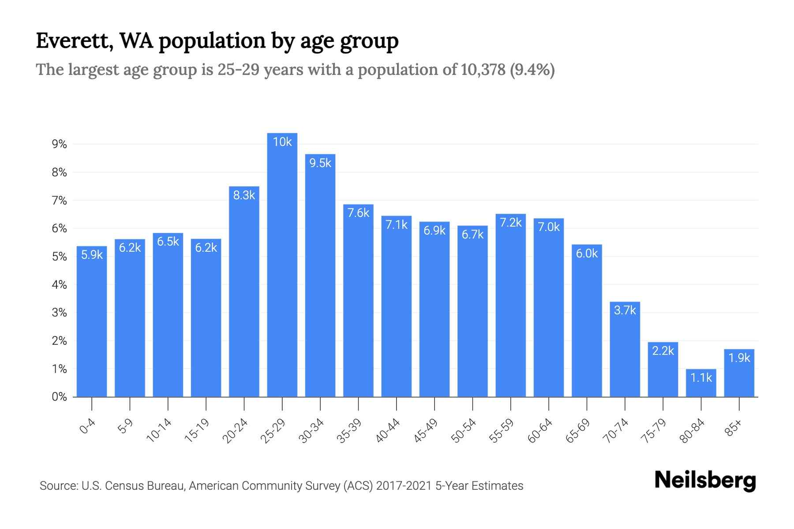
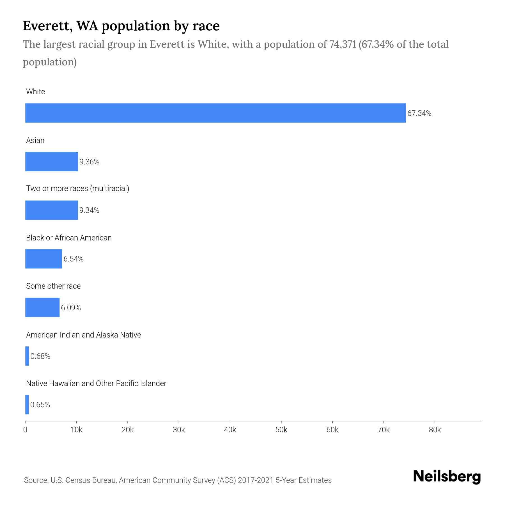

Welcome to our website! Here, you'll find engaging interviews with individuals from Everett, alongside insightful historical facts and significant events that have shaped our city. Everett is a very important part of our lives: We live here, and want to share the beauty of Everett from important stats, interviews from citizens, and the history of where we live. Everett means a lot to us and our community: it’s the very place we call home. So much of our lives are shaped by living here, and we want to pay tribute to our community with this. We sincerely hope that you enjoy this look into Everett! Prepare to dive in and enjoy a slice of life at the city of aerospace; EVERETT!
-From the creators of "Everett and Me"
WHY DOES THIS MATTER?
This matters to us because we want to express the beauty and charm of our community and bring it to others. We want to share the history and our own stories, and different viewpoints that have brought Everett together. Everett isn’t just a city; it’s a home. It’s not just the place you come home to after school or work; it’s the place that brings people together and is a sanctuary for many individuals, no matter what race, job, or religion. Everett works hard together to achieve many things.
Everett is a community that works together as a whole. Everett is a collection of skilled and talented minds. There are also many dedicated members here, such as our TSA. Everett is a diverse and accepting community.

WHAT DOES THE DATA SAY?
The data shows that Everett’s population is mostly White, at 67.34% of the population. 9.36% of the population is Asian with the third most being Black/African American at 6.54% of the overall population. About 6% of the population is some other race not mentioned. Finally, less than 1% of the population is American Indian, Alaska Native, Native Hawaiian/other Pacific Islander. It shows that 10k people are 20-29 in Everett,the highest age range and 9.5k are 30-34. The lowest age range of Everett has would be the 80-84 aged population.
MAJOR HISTORIC EVENTS
Everett didn’t start off as the flourishing city we all know it to be: it has a history worth talking about. Everett got its name when at a New York city dinner party, East Coast capitalists were planning to make an industrial city on Puget Sound. When deciding the name, the leader of the capitalists, Henry Hewitt spotted the host’s son, Everett, asking for more dessert. He thought, “This boy wants only the best, and so do we. We should name the city Everett.”